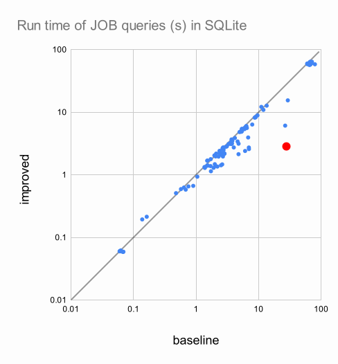

Why you should care about instance-optimal join algorithms
Disclaimer: I’ll admit to clickbaiting and this post mainly tries to get you to care about instance-optimal join algorithms. However, the speedup in SQLite is meaningful, but understanding it involves a lot of nuances. If you start to think “this is BS” at any point, check the fine print at the end of this post.
Let’s jump right to the numbers. The plot below compares the run time of SQLite on 113 queries from the Join Order Benchmark before and after the change. Each data point corresponds to a query, where x-coordinate is the run time before the change, and y-coordinate is the run time after. If a point is below the diagonal line, it means the query ran faster after the change. For example, the big red dot is query 8c, taking 27.883 seconds before the change and 2.843 seconds after (a speedup of 9.8x).

And here’s the diff, applied to commit
a67c71224f5821547040b637aad7cddf4ef0778a of SQLite’s GitHub
mirror:
diff --git a/src/where.c b/src/where.c
index 11e24a8d39..be1fa38b6f 100644
--- a/src/where.c
+++ b/src/where.c
@@ -6451,17 +6451,15 @@ static SQLITE_NOINLINE void whereCheckIfBloomFilterIsUseful(
assert( OptimizationEnabled(pWInfo->pParse->db, SQLITE_BloomFilter) );
for(i=0; i<pWInfo->nLevel; i++){
WhereLoop *pLoop = pWInfo->a[i].pWLoop;
- const unsigned int reqFlags = (WHERE_SELFCULL|WHERE_COLUMN_EQ);
+ const unsigned int reqFlags = WHERE_COLUMN_EQ;
SrcItem *pItem = &pWInfo->pTabList->a[pLoop->iTab];
Table *pTab = pItem->pSTab;
- if( (pTab->tabFlags & TF_HasStat1)==0 ) break;
pTab->tabFlags |= TF_MaybeReanalyze;
if( i>=1
&& (pLoop->wsFlags & reqFlags)==reqFlags
/* vvvvvv--- Always the case if WHERE_COLUMN_EQ is defined */
&& ALWAYS((pLoop->wsFlags & (WHERE_IPK|WHERE_INDEXED))!=0)
){
- if( nSearch > pTab->nRowLogEst ){
testcase( pItem->fg.jointype & JT_LEFT );
pLoop->wsFlags |= WHERE_BLOOMFILTER;
pLoop->wsFlags &= ~WHERE_IDX_ONLY;
@@ -6470,7 +6468,6 @@ static SQLITE_NOINLINE void whereCheckIfBloomFilterIsUseful(
"lookups into %s which has only ~%.1e rows\n",
pLoop->cId, (double)sqlite3LogEstToInt(nSearch), pTab->zName,
(double)sqlite3LogEstToInt(pTab->nRowLogEst)));
- }
}
nSearch += pLoop->nOut;
}What’s going on is actually very simple. We’re looking at the
function whereCheckIfBloomFilterIsUseful, which decides
whether to use a bloom filter in the query plan. The comment of the
function is self-explanatory:
/*
** Check to see if there are any SEARCH loops that might benefit from
** using a Bloom filter. Consider a Bloom filter if:
**
** (1) The SEARCH happens more than N times where N is the number
** of rows in the table that is being considered for the Bloom
** filter.
** (2) Some searches are expected to find zero rows. (This is determined
** by the WHERE_SELFCULL flag on the term.)
** (3) Bloom-filter processing is not disabled. (Checked by the
** caller.)
** (4) The size of the table being searched is known by ANALYZE.
**
** This block of code merely checks to see if a Bloom filter would be
** appropriate, and if so sets the WHERE_BLOOMFILTER flag on the
** WhereLoop. The implementation of the Bloom filter comes further
** down where the code for each WhereLoop is generated.
*/Basically, SQLite makes a guess if (1) and (2) are true based on table statistics, and only uses a bloom filter if they are. My change just says: “don’t bother guessing and always use a bloom filter”.
To understand why such a small change can have such a dramatic effect, we will take a detour into database theory and talk about instance-optimal join algorithms. You are probably familiar with the notion of an optimal algorithm: we say an algorithm is optimal if there is no other algorithm with a lower asymptotic complexity. For example, merge sort is optimal because it has a worst-case complexity of O(n \log n), and there cannot be another algorithm with a lower complexity. However, although merge sort is optimal in the worst case, there are faster algorithms for certain input instances. For example, if the input is already sorted, insertion sort runs in linear time, while merge sort still runs in \Theta(n \log n). Instance optimality is therefore a much stronger notion than worst-case optimality: an algorithm is instance-optimal if it is the fastest possible algorithm for every input instance. A related concept with a catchier name is Universal Optimality which is actually a weaker guarantee, but we will not go into details here.
Instance-optimality is extremely rare in the world of algorithms, because such an algorithm is basically perfect in terms of asymptotic complexity. But there is actually an instance-optimal algorithm for one of the most fundamental operations in databases: the relational join. Plus, the algorithm is more than 40 years old! In 1981, Yannakakis describe the first algorithm for computing the join of multiple relations in time O(|\textsf{IN}| + |\textsf{OUT}|), where |\textsf{IN}| is the total size of the input relations and |\textsf{OUT}| is the size of the output. It’s easy to see why such an algorithm is instance-optimal: any deterministic algorithm must read the entire input and produce the entire output, so it cannot run faster than O(|\textsf{IN}| + |\textsf{OUT}|).
If Yannakakis’ algorithm is so perfect, why haven’t you heard of it? And it’s not just you: none of the mainstream databases today implement it. You guessed it: the issue is hidden behind the big-O. To achieve instance-optimality, Yannakakis’ algorithm makes two preprocessing passes over the input data, before making a third pass to compute the final output. This incurs an overhead of nearly 3x for every query. As a result, real systems sadly have to stick with suboptimal algorithms (like the binary hash join and sort-merge join) that are faster in practice. Until now.
In the past couple of years, there has been an explosion of research on making instance-optimal join algorithms practical. Although these papers all appear to take different approaches, they are all based on the same principle. For the rest of the post, I’ll try to convince you that you could have come up with these new algorithms yourself.
Let’s consider with a simple join over k relations R_1, R_2, \ldots, R_k:
SELECT *
FROM R1, R2, R3, ..., Rk
WHERE R1.x = R2.x
AND R2.x = R3.x
AND ... The relations contain other columns, but we don’t care about them for now. If you’ve taken a databases course, you probably remember the nested loop join being introduced as the most naive join algorithm. It works as follows: to join together k relations, we construct a nested loop of k levels, iterating over one relation at each level. Then, in the innermost loop, we check if all the join conditions hold. If so, we concatenate the tuples and output them. Otherwise we continue to the next iteration.
for t1 in R1:
for t2 in R2:
for t3 in R3:
...
if join_condition(t1, t2, t3, ...):
print(t1 ++ t2 ++ t3 ++ ...)This would take \Theta(N^k) time, if each relation has N tuples. A better algorithm is the binary hash join. It’s called binary because we join two relations at a time. For example, to join R_1 and R_2 with R_1.x = R_2.x, we first build a hash table on R_2, mapping each value x to the set of tuples t_2 \in R_2 such that t_2 contains x. Then, we iterate over R_1, and for each tuple t_1 \in R_1, we look up the hash table to find all tuples t_2 \in R_2 such that t_1.x = t_2.x.
# build hash table on R2 with keys on x
h2 = {}
for t2 in R2:
if t2.x not in h2:
h2[t2.x] = [t2]
else:
h2[t2.x].append(t2)
# iterate over R1 and probe into h2
for t1 in R1:
if t1.x in h2:
for t2 in h2[t1.x]:
print(t1 ++ t2)To keep the code simple I’m printing the output, but in
practice we would save each output to a buffer. If we write R_1 \bowtie R_2 to mean the join of R_1 and R_2,
we can then compute the join of all k
relations by joining them one pair at a time, i.e.: (((R_1 \bowtie R_2) \bowtie R_3) \bowtie \cdots
\bowtie R_k) Here each \bowtie
is computed using the binary hash join algorithm. Implemented naively,
we would save the output of each join to a temporary relation, and then
join that temorary relation with the next relation:
T1 = join(R1, R2)
T2 = join(T1, R3)
...In reality, multiple joins are fused together into a pipeline, without materializing the intermediate results. This is implemented by nesting the loops of the next join immediately inside the loop of the previous join:
# build hash tables on R2, R3, ..., Rk
h2 = {}
h3 = {}
...
for t1 in R1:
if t1.x in h2:
for t2 in h2[t1.x]:
# instead of producing t1 ++ t2, immediately probe into t3
if t2.x in h3:
for t3 in h3[t2.x]:
...
print(t1 ++ t2 ++ t3)This way, we don’t need to store any temporary results, and can compute the final output in constant space (or O(|\textsf{OUT}|) space if we need to store the output in a buffer).
If you read the code above very very carefully, you might have found
a simple way to optimize it. In particular, we can move the check
if t2.x in h3 outside the loop over t_2:
for t1 in R1:
if t1.x in h2:
#---------------------------------------------------------#
if t1.x in h3: # probe into h3 before looping over t2 #
for t2 in h2[t1.x]: #
#---------------------------------------------------------#
for t3 in h3[t2.x]:
...
print(t1 ++ t2 ++ t3)We can do this because the join condition says t_1.x = t_2.x, so the value of x stays the same for all tuples t_2 in R_2. This is also a good idea, because it avoids many potentially useless iterations over R_2. In fact, we can do this for all subsequent relations from the inner loop:
for t1 in R1:
if t1.x in h2:
if t1.x in h3:
if t1.x in h4:
...
for t2 in h2[t1.x]:
for t3 in h3[t2.x]:
for t4 in h4[t3.x]:
...
print(t1 ++ t2 ++ t3 ++ ...)Here we have pulled up all the checks before doing any iteration. As a result, all iterations in the inner loops are guaranteed to produce results. Because it takes constant time to probe into a hash table, the algorithm now takes O(|R_1|) to iterate over R_1 and perform the checks, plus O(|\textsf{OUT}|) to produce the output.
I’m going to call this idea of pulling the checks out of iterations don’t count your rows before they match, and it is really the key idea behind different instance-optimal join algorithms. This idea is also quite old, dating back to at least the 90s and has incarnated under different names including sideway-information passing, lookahead information passing, hash filters, bitmap filters, etc. See the bibliography of these papers for more references.
Nevertheless, it wasn’t until recently when people made the connection between this optimization and instance-optimality. Because the optimization is not enough to make the join instance-optimal! Our recent paper shows a counterexample, and proposes another simple tweak to fix it: whenever a hash probe fails, go back to the enclosing loop and delete the current tuple being iterated over. I won’t go into the specifics here and encourage you to read the paper for details (we tried hard to make it accessible).
In the example above, we pulled out hash lookups to run earlier in the nested loops. But in many workloads most time is spent in building the hash tables before the loops even started. We can also save time there by running the probes as we build the hash tables:
# build hash tables on R2
# the same way as before
h2 = {}
for t2 in R2:
...
# probe into h2 as we build h3
h3 = {}
for t3 in R3:
if t3.x in h2: # only insert if x is in h2
if t3.x not in h3:
h3[t3.x] = [t3]
else:
h3[t3.x].append(t3)
# probe into h3 as we build h4
h4 = {}
for t4 in R4:
if t4.x in h3: # only insert if x is in h3
if t4.x not in h4:
h4[t4.x] = [t4]
else:
h4[t4.x].append(t4)
...This way, we only insert tuples that can match the previous relations into the hash tables. This keeps the hash tables small which also speeds up the lookups (e.g. if the hash table is small enough, it can fit in the CPU cache). However, because we still need the probes in the nested loops, we can end up performing 2x as many probes as before in the worst case. Consider the case where every tuple joins with every other tuple in the next relation, i.e., the hash lookups always succeed. Then the probes during hash building are completely futile. The focus of many recent papers is to mitigate this overhead. For example, the predicate transfer line of work probes into bloom filters instead of hash tables during the build phase to keep any potential overhead low. Another approach is to keep track of pointers to matching tuples for each probe in the build phase. This way we can build up a nested representation of the join results, and in the nested loops we only need to flatten the nested representation without any additional probes. One can also leverage key constraints to avoid touching hash probes that do not affect the overall asymptotic complexity.
So what did I actually to in SQLite to make it faster? In fact, the credit should go to the fine folks at SQLite and Wisconsin. Their paper describes an implementation of lookahead information passing (LIP) using bloom filters. Although not explicitly stated in the paper (which makes me believe they also didn’t realize it), LIP can achieve instance-optimality for star schema joins. However, in the SQLite implementation they were too clever, and essentially implemented a cost-based heuristic to decide when and where to use bloom filters. But instance-optimality can only be achieved by using bloom filters everywhere, as soon as possible! That’s exactly what happened in the diff above.
This phenomenon of algorithm superseding query optimization is also noted by the predicate transfer paper. They showed that join ordering basically doesn’t matter anymore, if the join algorithm is instance-optimal. This is kind of a big deal, because the query optimizer is one of the hardest parts of a database. Many companies hire exclusively PhDs to work on the optimizer, and query optimization is fundamentally NP-hard. Optimizers also ship too much magic and makes debugging and performance tuning hard, because what’s running has little to do with what you wrote in SQL. I’m hopeful that with the progress in instance-optimal join algorithms, we can take some magic away from the optimizer and make database systems much simpler and reliable.